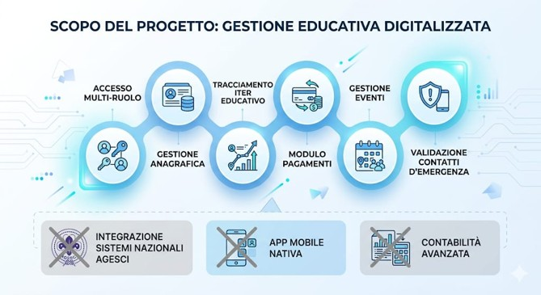

Pianificazione e Sviluppo del Progetto "Scout Admin"
La materia di GPOI fornisce le basi metodologiche, organizzative e normative necessarie per pianificare e gestire il ciclo di vita di un software. Durante l'anno ho applicato questi principi teorici alla modellizzazione del mio progetto personale denominato Scout Admin, una piattaforma progettata per digitalizzare la gestione amministrativa ed educativa dei gruppi scout.
1. Il Contesto del Progetto (Analisi As-Is e To-Be)
Il progetto nasce dall'analisi dei bisogni reali della struttura organizzativa scout:
- Stato Attuale (As-Is): Gestione frammentata, inefficiente e basata su moduli cartacei, e-mail sparse e pagamenti manuali. Questo comporta un alto rischio di errore o smarrimento di dati critici come contatti di emergenza e allergie.
- Stato Futuro (To-Be): Introduzione di una web app cloud centralizzata che connette direzione, educatori e famiglie, riducendo del 70% il carico di lavoro burocratico dei capi unità.
2. Strumenti di Pianificazione e Controllo
Per l'organizzazione del lavoro e il monitoraggio dello sviluppo sono state utilizzate le principali metodologie di Project Management previste dal programma di GPOI:
- WBS (Work Breakdown Structure): Scomposizione gerarchica del progetto in pacchetti di lavoro elementari (Analisi, Infrastruttura, Sviluppo funzionalità Core, Integrazione pagamenti, Test e Rilascio).
- Matrice RACI: Assegnazione precisa dei ruoli organizzativi per ciascuna attività, definendo chi esegue (Responsible), chi approva (Accountable), chi viene consultato (Consulted) e chi informato (Informed).
- Diagramma di Gantt: Pianificazione temporale dello sviluppo per monitorare le scadenze, la durata delle attività e le dipendenze tra i vari moduli software.
- KPI (Indicatori di Successo): Indicatori numerici per misurare l'efficacia a 12 mesi, come l'accuratezza dei dati anagrafici (target >95%) e il tracciamento digitale dei pagamenti.
3. Gestione dei Requisiti e dei Vincoli (Scope e GDPR)
La definizione dei confini del progetto e il rispetto delle normative vigenti sono pilastri aziendali fondamentali:
- Perimetro (Scope Management): Per evitare ritardi, è stato definito rigidamente cosa sviluppare subito (anagrafica dei soci, iter educativo, pagamenti e gestione eventi) e cosa escludere o rimandare (come l'app mobile nativa).
- Conformità GDPR: Trattando dati medici sensibili di minori (allergie e farmaci), il sistema applica una rigida sicurezza "privacy by design". Gli accessi sono profilati in base al ruolo (RBAC) in modo che ciascun capo possa visualizzare esclusivamente i dati della propria unità, e i server cloud sono localizzati all'interno dell'Unione Europea.
4. Analisi dei Rischi (Risk Management)
Durante la pianificazione è stato redatto un registro dei rischi per anticipare i problemi logistici e infrastrutturali:
- Rischio Identificato: Scarsa o assente connettività internet durante le attività scout e le uscite all'aperto.
- Strategia di Mitigazione: Implementazione di una modalità offline per le funzionalità più importanti, come il registro digitale delle presenze dell'unità, con sincronizzazione automatica dei dati sul cloud non appena la connessione torna disponibile.
